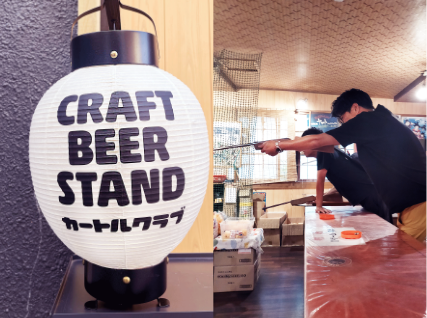

人事部
「面接は誰が対応されますか？」
私たちがしっかりと対応いたします。安心して応募してください。
みなさんのキャリア形成を、プロジェクト着任後もサポートします。
本人の希望を実現しやすいように、仕事上での相談、ちょっとした相談など
みなさんがより働きやすい環境づくりに努めています。

人事部
林 南
入社後の安心ステップ
「入社から着任までの流れ」
下記のStep1〜5は未経験の方向けの一例です。
step1
step2
step3
step4
step5
入社

- 〇社内ルールの説明
- 〇研修準備
研修

- 〇基本研修*
- 〇IT研修*
準備

- 〇必要なスキルの
調査・準備
打ち合わせ

- 〇業務内容の説明
着任

- 〇プロジェクト着任
研修の内容について
「基礎研修」
・・・
マナー・セキュリティ
「IT研修」
・・・
IT用語/アルゴリズム/エクセル/VBA/グループワーク
ご入社される方の状況にあわせて臨機応変に対応していますので、ご安心ください。
不安なことはいつでも相談できる環境を用意しています。
不安なことはいつでも相談できる環境を用意しています。
評価
「評価の見える化」
ステージごとの役割と昇格制度

評価の見える化

「役割等級制度」という制度を導入し、評価基準を明確化しております。
人事考課時に設定した等級とエンジニアの技量、仕事振りがマッチするかどうか判定し、
昇格・降格基準に照らし合わせて等級を設定しなおします。
人事考課時に設定した等級とエンジニアの技量、仕事振りがマッチするかどうか判定し、
昇格・降格基準に照らし合わせて等級を設定しなおします。
その他
「当社の人事は他社と一味違う！」
仕事以外のことでも相談を受けています。
例えば…
NISAやりたいんだけど、どうしたらいい？
引越したいんだけど、いい不動産屋紹介してくれませんか？
子供の就職活動にアドバイスしてくれませんか？
雰囲気がいいお店この辺にありませんか？ などなど。
個人的なことも相談にのりますよ。
NISAやりたいんだけど、どうしたらいい？
引越したいんだけど、いい不動産屋紹介してくれませんか？
子供の就職活動にアドバイスしてくれませんか？
雰囲気がいいお店この辺にありませんか？ などなど。
個人的なことも相談にのりますよ。

ほんの少しだけですが、当社の人事は他社と違うかもしれません。
・転職コンサル、ITエンジニアの経験がある
・入社時初期研修の講師もやる
・家賃交渉したりする
・すぐ飲みに行きたがる
・白髪を気にしてピンクに染めたりする
・ひざが痛い
多分、違いはこれくらいです。
もう少し説明すると、エンジニア経験が少しだけあるため、エンジニアが 戸惑ったり、
悩んだりするポイントが「想像」できるところでしょうか。
また、転職コンサルの経験から、客観的な視点で現状を分析し、それぞれに マッチした
キャリア形成をアドバイスできるという点も、少しだけ違うところだと思います。
あなたのキャリア形成の伴走者として力添え出来たら、それが私たち採用担当者の喜びです。
・転職コンサル、ITエンジニアの経験がある
・入社時初期研修の講師もやる
・家賃交渉したりする
・すぐ飲みに行きたがる
・白髪を気にしてピンクに染めたりする
・ひざが痛い
多分、違いはこれくらいです。
もう少し説明すると、エンジニア経験が少しだけあるため、エンジニアが 戸惑ったり、
悩んだりするポイントが「想像」できるところでしょうか。
また、転職コンサルの経験から、客観的な視点で現状を分析し、それぞれに マッチした
キャリア形成をアドバイスできるという点も、少しだけ違うところだと思います。
あなたのキャリア形成の伴走者として力添え出来たら、それが私たち採用担当者の喜びです。
研修・部会・イベント
「オフィシャルなものからお気軽なものまで様々！」
研修・各部門の集まり・方針発表会・社員旅行・不定期な飲み会など 交流の場が定期的に用意されています。
コロナのため見合わせていた社員旅行を、3年ぶりに実施しました。
※自由参加ですが、社員の半数が参加してくれました。
P.S ㊙おもしろ画像リンクあります！^-^
伊香保温泉でゆったりまったり。
自由時間たっぷりの温泉旅行！
今回の目的地は群馬県の伊香保温泉。
会社にお昼過ぎに集合し、バスを2台貸し切り向かいます。
道中はお酒を飲む人、寝る人、読書をする人、それぞれ自由に過ごしていました。
会社にお昼過ぎに集合し、バスを2台貸し切り向かいます。
道中はお酒を飲む人、寝る人、読書をする人、それぞれ自由に過ごしていました。
目的地の温泉宿に到着しました！
いつもと違う場所に仕事仲間といくのは新鮮ですね。
修学旅行を思い出します。
いつもと違う場所に仕事仲間といくのは新鮮ですね。
修学旅行を思い出します。
荷物を置いて「伊香保の石段」に向かいます。
豊かな自然と美味しい空気でリフレッシュですね。
たまにはこうゆうのもいいですね。
豊かな自然と美味しい空気でリフレッシュですね。
たまにはこうゆうのもいいですね。
みたらし団子かと思いきや！ヘルシーなこんにゃく団子。
普段は食べないものでも、旅先で食べるとまた一味違います。不思議ですよね。
普段は食べないものでも、旅先で食べるとまた一味違います。不思議ですよね。

童心に戻って、射的に夢中の先輩たちを見ることができました。
集中力はハンパないですね。
本気で取りに行ってます！
集中力はハンパないですね。
本気で取りに行ってます！
楽しみにしていた温泉・サウナ！
日頃の疲れをゆっくりと良いお湯で癒しました。
情緒あふれる雰囲気で、テンションも上がります。
日頃の疲れをゆっくりと良いお湯で癒しました。
情緒あふれる雰囲気で、テンションも上がります。
宴会場での夕食では、普段交流を持ちづらい社員同士や上長などと団欒のひととき。
ほっこり温泉で寛いだ後の交流は和らいだ雰囲気を作り出してくれます。
みんなで食べる料理はいつもと雰囲気も違い、またバリエーションもあり楽しかったです！
ほっこり温泉で寛いだ後の交流は和らいだ雰囲気を作り出してくれます。
みんなで食べる料理はいつもと雰囲気も違い、またバリエーションもあり楽しかったです！
楽しい夜はあっという間に終わり、朝食です。
昨日の余韻に浸りながら帰り支度をします。
昨日の余韻に浸りながら帰り支度をします。
楽しかった社員旅行も残すは帰路のみ。
名残惜しそうに宿を後にしました。
次回の社員旅行はどこに行くのか、今から楽しみです。
名残惜しそうに宿を後にしました。
次回の社員旅行はどこに行くのか、今から楽しみです。
温泉に入ってまったり、夜は楽しい宴会と卓球やカラオケ…
各々好きな楽しみ方をしていたようです。
久々の社員旅行を満喫しました。
各々好きな楽しみ方をしていたようです。
久々の社員旅行を満喫しました。

頑張っている皆さん！
いつもお疲れ様です！
また行きましょうね。
人事からのメッセージ
今までのキャリアに自信がない方でも、よく見ると自慢できる部分もあるはずです。 それを見つけるの、実は得意です。これからのキャリアを一緒に考えていきましょう。 実は難しいことなんですけどね。
人事部
黒木 優